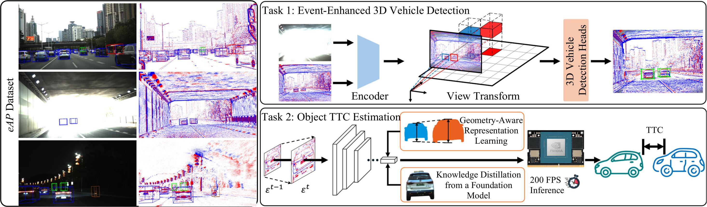

IEEE Transactions on Robotics (T-RO) 2025
Toward Deep Representation Learning for Event-enhanced Visual Autonomous Perception:
the eAP Dataset
Jinghang Li*, Shichao Li*, Qing Lian, Peiliang Li, Xiaozhi Chen, Yi Zhou†
Zhuoyu Technology
* Equal contribution † Corresponding author
